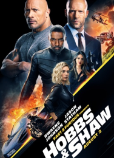
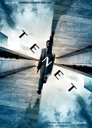

FILMES PARA VER COM A FAMÍLIA(livre para todos publicos)
 |
Na glamourosa cidade de Redshore, Buster Moon e a galera enfrentam seus medos, fazem novos amigos e superam seus limites em uma jornada para convencer o recluso astro Clay Calloway a subir aos palcos novamente |
 |
Encanto conta a história dos Madrigal, uma família extraordinária que vive escondida nas montanhas da Colômbia, em uma casa mágica, em uma cidade vibrante, em um lugar maravilhoso conhecido como um Encanto. A magia deste Encanto abençoou todos os meninos e meninas da família com um dom único, desde superforça até o poder de curar. Todos, exceto Mirabel. |
 |
Apesar da proibição da música por gerações de sua família,Miguel sonha em se tornar um músico talentoso. Desesperado para provar seu talento, Miguel se encontra na deslumbrante e colorida Terra dos Mortos. Depois de conhecer um charmoso malandro chamado Héctor, os dois novos amigos embarcam em uma jornada extraordinária. |
FILMES DE AÇÃO(Recomendado para maiores de 14anos)
|  | O corpulento policial Luke Hobbs se junta ao fora da lei Deckard Shaw para combater que um virus que causará a morte de toda populção porem um terrorista geneticamente melhorado que tem força sobre-humana tenta impedí-los |
 | Um agente da CIA é recrutado por uma organização misteriosa, chamada Tenet, para participar de uma missão de escala global. Eles precisam impedir um renegado oligarca russo comece a Terceira Guerra Mundial poré oque eles não esperavam era que o russo possuia uma maquina de inversão temporal |
 |
Agora já conhecidos como os Guardiões da Galáxia, os guerreiros viajam ao longo do cosmos e lutam para manter sua nova família unida. Enquanto isso tentam desvendar os mistérios da verdadeira paternidade de Peter Quill |
FILMES EM CARTAZ
 |
O astuto Nathan Drake é recrutado pelo experiente caçador de tesouros Victor "Sully" Sullivan para recuperar uma fortuna acumulada por Ferdinand Magellan e perdida há 500 anos pela Casa de Moncada. |
 |
Com a identidade do Homem-Aranha revelada, Peter pede ajuda ao Doutor Strange. Quando um feitiço corre mal, inimigos perigosos de outros mundos começam a aparecer, forçando Peter a descobrir o que realmente significa ser o Homem-Aranha. |
 |
Quando um assassino tem como alvo a elite de Gotham, uma trilha de pistas enigmáticas leva o detetive para o submundo, onde ele encontra personagens como Mulher-Gato, Pinguim, Charada. Quando as evidências começam a chegar perto de casa, e a escala do criminoso fica clara, Batman precisa criar novas relações, desmascarar o culpado e levar justiça para o abuso de poder e corrupção que assolam Gotham há muito tempo.” |